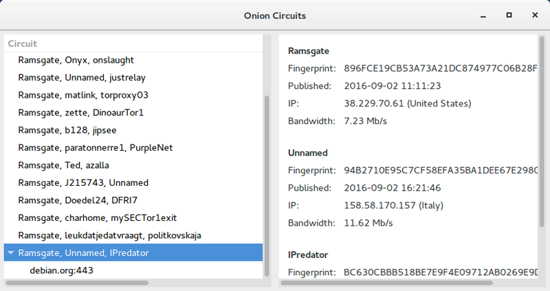

We believe security software like Whonix needs to remain Open Source and independent. Would you help sustain and grow the project? Learn more about our 11 year success story and maybe DONATE!

Using a Tor Controller with Whonix. Onion Circuits. Nyx. View or change your Tor circuits. Monitor Tor and inspect logs.

Introduction
Nyx is the primary Tor Controller option that comes pre-installed in Whonix.
Note: Vidalia has been deprecated and is no longer packaged in Debian.
Nyx
 The nyx Tor
controller is a later version of the
The nyx Tor
controller is a later version of the arm package, so the
functionality and appearance are very similar. The Tor Project nyx homepage states:
"Nyx is a command-line monitor for Tor. With this you can get
detailed real-time information about your relay such as bandwidth usage,
connections, logs, and much more."
Nyx Usage
Nyx is recommended and comes pre-installed in Whonix-Gateway™. [1]
If you are using a graphical Whonix-Gateway, complete the following steps.
Start Menu → Applications →
System → Nyx - Status Monitor for Tor
If you are using a terminal Whonix-Gateway, type.
nyx
If you are using Qubes-Whonix™, complete the following steps.
Qubes App Launcher (blue/grey "Q") →
Whonix-Gateway™ ProxyVM (commonly named sys-whonix)
→ Nyx - Status Monitor for Tor
To receive a new circuit, press:
nTo exit Nyx, press:
q
qNyx FAQ
Message / Question |
Response |
|---|---|
arm vs nyx? |
The software was previously called |
Should any of the following nyx messages concern me? |
No; see below for reasons why. See also: Indicators of Compromise and Support Request Policy (rationale). |
Am I compromised? Does nyx report leaks? |
Nyx is not designed to detect serious issues such as possible compromises or leaks. [3] Nyx is listed on the leak tests wiki page in chapter Unsuitable Tests. |
Nyx sometimes shows
my public IP address and other times the internal |
This is a normal Nyx feature. Whonix utilizes a Tor control port
filter proxy (onion-grater)
that prevents abuse of the |
Tor is preventing system utilities like netstat and lsof from working. This means that nyx can't provide you with connection information. You can change this by adding 'DisableDebuggerAttachment 0' to your torrc and restarting tor. For more information see... https://gitlab.torproject.org/legacy/trac/-/issues/3313 |
If you want to learn about the technical details, read https://gitlab.torproject.org/legacy/trac/-/issues/3313. |
DisableDebuggerAttachment even when running as root. |
This bug in Nyx has been resolved. |
man page (GENERAL OPTIONS and COMMAND-LINE OPTIONS) |
This bug in Nyx has been resolved. |
[WARN] Socks version 71 not recognized. (Tor is not an http proxy.) |
This is caused by the
|
[WARN] Socks version 71 not recognized. (This port is not an HTTP proxy; did you want to use HTTPTunnelPort?) |
This occurs for similar reasons to the entry above. |
[WARN] Rejecting request for anonymous connection to private address [scrubbed] on a TransPort or NATDPort. Possible loop in your NAT rules? |
This happens, for example, if you run
|
[NOTICE] You configured a non-loopback address '10.152.152.10:9179' for SocksPort. This allows everybody on your local network to use your machine as a proxy. Make sure this is what you wanted. [1 duplicate hidden] (Or another port number or DnsPort or TransPort.) |
Tor is genuinely listening on that IP/port. It belongs to the Whonix-Gateway network interface and is only accessible from Whonix-Workstation™. This restriction is enforced by an internal network between Whonix-Workstation™(s), and Whonix-Gateway is also protected by a firewall. See /usr/bin/whonix_firewall or the Whonix source code for further details. |
[NOTICE] New control connection opened. [2 duplicates hidden] (Or more duplicates.) |
This is caused by
|
[NOTICE][NYX_WARN] The torrc differs from what Tor is using. You can issue a sighup to reload the torrc values by pressing x. Configuration value is missing from the torrc: RunAsDaemon |
|
"192.168.0.1 UNKNOWN 1 / Guard" in circuit information |
This indicates that you are connecting to the Tor network using a Tor Bridge. If you are connecting directly to the public Tor network without a Tor Bridge, the real IP and Nickname of the Guard should be visible instead. [8] |
Nyx Autostart
Optional.
1. Platform specific notice:
- Non-Qubes-Whonix: No special notice.
- Qubes-Whonix: Inside Template.
2. Symlink start menu entry to autostart.
sudo ln -s /usr/share/applications/gateway-nyx.desktop /etc/xdg/autostart/gateway-nyx.desktop
3. Done.
Nyx should now autostart after the next reboot.
Onion Circuits
[9]Onion Circuits is a GTK+ application to display Tor circuits and streams. It allows the user to inspect the circuits the locally running Tor daemon has built, along with some metadata for each node.
Onion Circuits is installed by default but is not a full Tor controller; it only displays Tor circuits. It can be launched from the start menu.
New Identity and Tor Circuits
The behavior of "New Identity" in the context of Tor Browser and
nyx is often misunderstood. First, there are various ways
to issue a "New Identity" (this list is not exhaustive):
In all cases, the "New Identity" function sends the protocol command
SIGNAL newnym to Tor's
ControlPort.
Tor Browser's new identity function additionally clears the browser state, closes tabs, and obtains a fresh Tor circuit for future requests. [10]
Other Tor controllers, such as nyx, run only
SIGNAL newnym.
 Warning: The New Identity feature will likely
create a new Tor circuit with a different Tor exit relay and IP
Address, but this is not guaranteed.
Warning: The New Identity feature will likely
create a new Tor circuit with a different Tor exit relay and IP
Address, but this is not guaranteed.
The impact of "signal newnym" on Tor circuit lifetimes is often misunderstood. "signal newnym" ensures a fresh circuit for new connections. However, sometimes Tor only replaces the middle relay while keeping the same Tor exit relay. This behavior is by design and follows the Tor default settings. Additionally, "signal newnym" does not interfere with long-lived connections such as file downloads, website downloads, SSH, or IRC connections.
Interested readers can verify the effect of "signal newnym" as follows:
- Open https://check.torproject.org in Tor Browser.
- Issue "signal newnym" using nyx.
- Reload https://check.torproject.org.
- In some cases, it will still show the same IP address, probably because the browser did not close the connection to https://check.torproject.org in the first place.
Now, repeat this experiment with a small modification, which should result in a new Tor exit IP address:
- Open https://check.torproject.org in Tor Browser.
- Issue "signal newnym" using nyx.
- Close Tor Browser, then restart it.
- Open https://check.torproject.org again. A new Tor exit relay IP address is (likely) visible.
New identity is not an IP selection or cycling feature; it is a circuit changer, not an IP changer. Tor replaces your real external IP address with a Tor IP, but it does not easily let users pick any specific IP. Tor determines the exit IP, and Whonix does not influence this. This is unspecific to Whonix.
Forcing an IP change might be possible, but this is discouraged as per Tor Routing Algorithm. Changing the Tor configuration to select specific IPs might be possible, but this is unsupported. Users attempting this must edit the Tor configuration themselves. The exact settings required would need to be researched by the user as per the Self Support First Policy, rather than asking in Whonix forums.
tor-ctrl
tor-ctrl is installed by default.
For example, to get a new circuit, run:
tor-ctrl signal NEWNYM
The output should show:
250 OKRepeat this command each time a new circuit is desired.
See also:
man tor-ctrl
Alternatives
 Advanced users only.
Advanced users only.
Talking to the Real Tor Controller
To communicate directly with the Tor Controller, run the commands on Whonix-Gateway. If executed on Whonix-Workstation, the connection passes through the onion-grater controller proxy, which may filter some commands.
On Whonix-Gateway, test is the example password. Use a different, stronger password if desired.
tor --hash-password test
This will return an output similar to:
16:1CEAF6E6A08E0CF460AFD71772461C5F56BD9738FA8824B882FCA4A785Tor configuration file.
Open the file /usr/local/etc/torrc.d/50_user.conf in a
 [Broken-ExtLink--no-url-was-provided] of your choice with administrative
rights.
[Broken-ExtLink--no-url-was-provided] of your choice with administrative
rights.
1 Sysmaint notice.
Ensure the VM has administrative (sudo / root) access first. See also sysmaint.
2 Platform specific. Select your platform.

Non-Qubes-Whonix
Requires booting into sysmaint session or
 [Broken-ExtLink--no-url-was-provided].
[Broken-ExtLink--no-url-was-provided].

Graphical Whonix-Gateway USER Session
This is not possible.

Graphical Whonix-Gateway SYSMAINT Session
If you are using a graphical Whonix-Gateway booted into
PERSISTENT Mode | SYSMAINT Session, take the following
step.
System Maintenance Panel ->
Open Terminal -> run
/usr/libexec/gateway-shortcuts/torrc

Graphical Whonix-Gateway Unrestricted Admin Mode
If you are using a graphical Whonix-Gateway and enabled
 [Broken-ExtLink--no-url-was-provided], take the following step.
[Broken-ExtLink--no-url-was-provided], take the following step.
Start Menu -> System Tools ->
Tor User Config

Terminal Whonix-Gateway
If you are using Whonix-Gateway with command line interface (CLI), take the following step. sudoedit /usr/local/etc/torrc.d/50_user.conf

Requires booting into sysmaint session or
 [Broken-ExtLink--no-url-was-provided].
[Broken-ExtLink--no-url-was-provided].

Graphical Qubes-Whonix
If you are using Qubes-Whonix™ with a graphical desktop, take the following step.
Qubes App Launcher (blue/grey "Q") ->
Service ->
Whonix-Gateway™ ProxyVM (commonly named sys-whonix)
-> Tor User Config

Terminal Qubes-Whonix
If you are using Qubes-Whonix™ with a terminal, open
a terminal in sys-whonix and run the following command.
sudoedit /usr/local/etc/torrc.d/50_user.conf
Add the following:
HashedControlPassword 16:1CEAF6E6A08E0CF460AFD71772461C5F56BD9738FA8824B882FCA4A785Reload Tor.
After changing Tor configuration, Tor must be reloaded for changes to take effect.
Note: If Tor does not connect after completing all
these steps, then a user mistake is the most likely explanation. Recheck
/usr/local/etc/torrc.d/50_user.conf and repeat the steps
outlined in the sections above. If Tor then connects successfully, all
the necessary changes have been made.
If you are using Qubes-Whonix™, complete the following steps.
Qubes App Launcher (blue/grey "Q") →
Service →
Whonix-Gateway™ ProxyVM (commonly named 'sys-whonix')
→ Reload Tor
If you are using a graphical Whonix-Gateway, complete the following steps.
Start Menu → System Tools →
Reload Tor
If you are using a terminal Whonix-Gateway, click
HERE
for instructions.
Complete the following steps.
Reload Tor.
sudo systemctl reload tor@default.service
Check Tor's daemon status.
sudo systemctl status tor@default.service
It should include a a message saying.
Active: active (running) since ...In case of issues, try the following debugging steps.
Check Tor's config.
sudo -u debian-tor tor --verify-config
The output should be similar to the following.
Sep 17 17:40:41.416 [notice] Read configuration file "/usr/local/etc/torrc.d/50_user.conf".
Configuration was validsudo service tor reload
To connect to Tor's Controller:
sudo -n -u debian-tor socat - UNIX-CONNECT:/var/run/tor/control
Authenticate:
authenticate "test"
A successful authentication returns:
250 OKTest commands, such as starting logging stream events:
setevents stream
Initially, this does nothing. However, when Tor is used (e.g., running Tor Browser, APT, etc.), stream events similar to the following appear:
650 STREAM 211 NEW 0 pop.riseup.net:995 SOURCE_ADDR=10.152.152.11:47036 PURPOSE=USER
...Whonix includes tor-ctrl, a wrapper for direct
communication with Tor's controller. This simplifies authentication,
socket connection, and cookie conversion to base32. While this section
explains direct communication without external programs, users can
accomplish the same task with:
tor-ctrl -w setevents stream
netcat
netcat is no longer required. tor-ctrl is recommended instead.
netcat provides an easy way to send Tor protocol commands to Tor's
ControlPort from within Whonix-Workstation. However, for
security reasons, commands are processed through onion-grater (Tor Control Protocol Filter
Proxy).
Inside Whonix-Workstation.
1. Install netcat.
sudo apt install netcat-openbsd
2. Connect to Tor's ControlPort.
[11]
nc 127.0.0.1 9051
3. Example command to change the Tor circuit.
signal newnym
Expected output:
250 OKtor-prompt
On Whonix-Gateway, run:
Example of tor-prompt in non-interactive mode:
tor-prompt --no-color --run "getinfo consensus/valid-until"
Example of tor-prompt in interactive mode:
tor-prompt
This will display an introduction similar to:
Welcome to Stem's interpreter prompt. This provides you with direct access to
Tor's control interface.
This acts like a standard python interpreter with a Tor connection available
via your 'controller' variable...
>>> controller.get_info('version')
'0.2.5.1-alpha-dev (git-245ecfff36c0cecc)'
You can also issue requests directly to Tor...
>>> GETINFO version
250-version=0.2.5.1-alpha-dev (git-245ecfff36c0cecc)
250 OK
For more information run '/help'.
>>>To run a Tor control protocol command, such as
GETINFO version, enter:
Note: Replace GETINFO version with the actual
command intended to run.
GETINFO version
Expected output:
250-version=0.2.5.1-alpha-dev (git-245ecfff36c0cecc)
250 OKDeprecated
Vidalia
 Vidalia is no longer maintained.
Vidalia is no longer maintained.
Vidalia is no longer recommended because development has ceased. As a result, it has been removed from all Debian variants (stretch, sid, etc.) and was also dropped from Tor Browser Bundle v3.5 by The Tor Project. [12] [13]
Vidalia had several limitations, such as the inability to fully control Tor. For example:
- It could not stop Tor when installed via the Debian package, as Tor runs under the user "debian-tor."
- It was unable to edit /usr/local/etc/torrc.d/50_user.conf. [14]
- It did not support obfuscated bridges.
Since Vidalia has been deprecated and provides a poor and confusing user experience, it is best to use nyx instead. [15]
See Also
Footnotes
- Since Vidalia is recommended against.
- https://tor.stackexchange.com/tags/nyx/info
- Nyx operates on a different level. It is a Tor Controller. Nyx
communicates with Tor via the
ControlPortand serves as an interface to display what Tor perceives. Neither Tor nor Nyx provides functionality for virus detection, compromise detection, or leak detection. While Nyx messages are generally informative and useful, they rarely indicate a cause for concern. - https://forums.whonix.org/t/strange-nyx-behavior/9514
- UWT_DEV_PASSTHROUGH=1 curl 10.152.152.10:9100
- https://gitlab.torproject.org/legacy/trac/-/issues/16459
- The issue was closed as 'not a bug' several years ago.
- https://forums.whonix.org/t/how-to-check-if-i-configured-bridges-correctly-and-the-bridges-are-working-properly/4371/5
- https://packages.debian.org/trixie/onioncircuits
- https://blog.torproject.org/torbutton-141-released
- This works in Whonix-Workstation because the anon-ws-disable-stacked-tor package opens localhost listener ports and forwards connections to Whonix-Gateway, where onion-grater (Control Port Filter Proxy) is listening.
- https://tor.stackexchange.com/questions/1075/what-happened-to-vidalia
- As noted by Tor developer Roger Dingledine:
Cammy is right -- we've removed the bridge/relay/exit bundles from the download page too, since Vidalia has been unmaintained for years and pointing people to unmaintained software is dangerous. I'd love to have enough developers to do everything at once, but we don't.
- It is unclear whether control commands such as New Identity were correctly processed either.
- Unless the reader is specifically interested in Vidalia's graphical network map.
Categories: Documentation